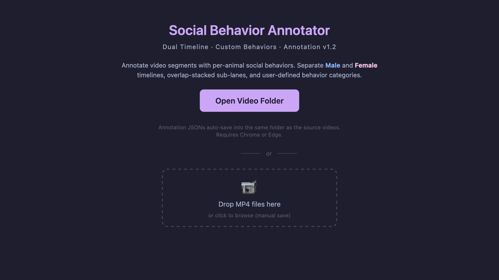

Open, collaborative projects from the Zhang Lab. Join us in building the next generation of tools for neuroscience and behavior research.
We are building a large-scale, open animal behavioral dataset to support research at the intersection of neuroscience, behavior, and artificial intelligence. The dataset will combine rich videos of mice behaviors with annotations, enabling the development and benchmarking of new analysis tools such as TRACE.
This is a community effort, and we are actively looking for collaborators to join. We welcome contributors at every level — from undergraduate students to senior researchers — and from every scientific background.
We welcome anyone interested in mouse behavior research, from all backgrounds, including:
If you are interested in contributing to this effort, please email Dr. Zhang at guangwei.zhang@vcuhealth.org with a brief note about your background and what you'd like to contribute.

We are developing an open, browser-based GUI for efficient annotation of social behaviors in mouse video recordings. The tool runs entirely in the browser — no installation required — and is designed to support the annotation workflow for our Animal Behavioral Dataset effort.
Launch the current development version directly from your browser and try it out. We welcome feedback, feature suggestions, and contributors interested in annotation tooling, UI/UX design, and computer vision.
Interested in contributing to the annotator development? Background in web development (JavaScript/HTML/CSS), computer vision, or behavioral neuroscience is especially welcome. Email Dr. Zhang at guangwei.zhang@vcuhealth.org to get involved.